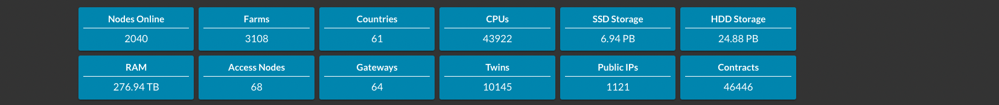
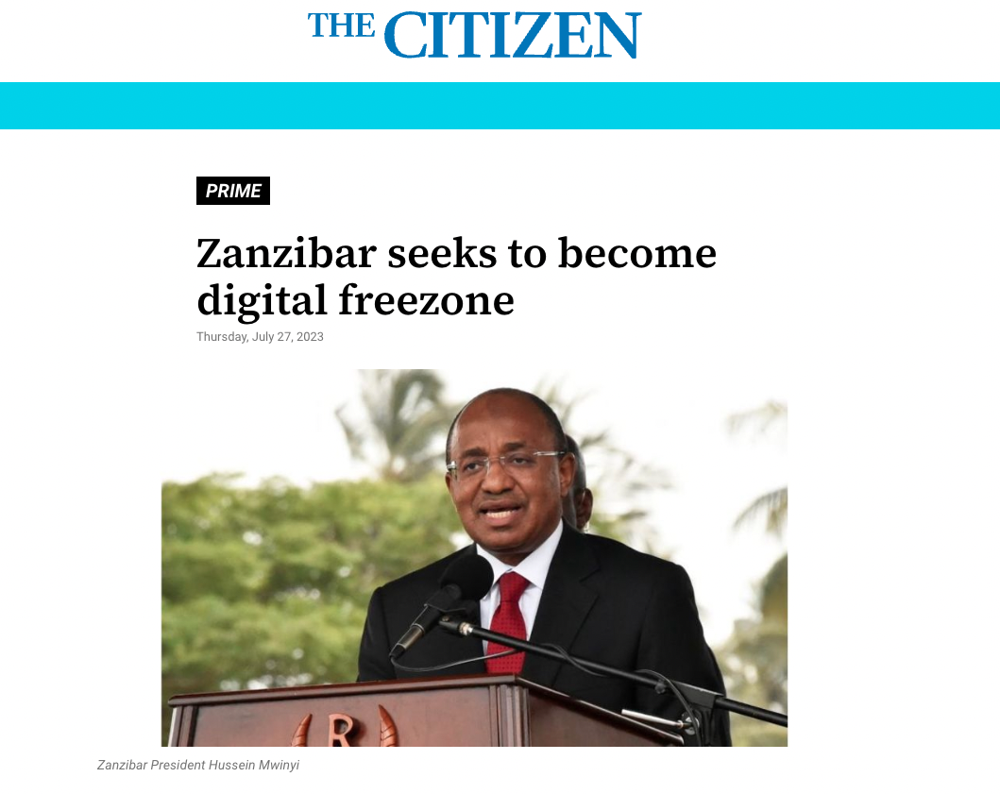

In a world where fear and greed prevail, we find ourselves in an incredibly exciting time where everything is possible.
We believe that many of the challenges we face today, such as clean energy and water, combating desertification, waste repurposing, healthy living, CO2 sequestration, and sustainable lifestyles, have already been resolved.
However, due to the influence of fear and greed, these much-needed innovations don’t find their way to market in an abundance-based way. We believe there are more than enough resources available in the world to allow everyone to have a prosperous and meaningful life.

Can you imagine a world where:
- Everyone is fully sovereign and can create their own future?
- Everyone has access to a working democratic Internet?
- Everyone has access to healthy food and medicine?
- Everyone has endless opportunities to learn and be creative?
- No one needs to live in fear, but we all learn to trust each other again?
- Money is a beautiful source of energy which allows us to create a better world together?
- We no longer have to depend on centralized services which are taking advantage of our data and manipulating our information?
OurWorld Venture Creator's mission is to help make this world a reality, and we can only do this by fundamentally changing the thought processes that caused the problems in the first place.
We are a passionate group of entrepreneurs and technologists who want to help create an antidote. We have a concrete plan which starts with a conscious funding model. We have already developed a new decentralized infrastructure layer for the Internet and Web 3.0, and we are now looking for partners with meaningful projects focused on harnessing the power of nature to make sure we are operating everything in a regenerative way.
OurWorld Venture Creator
We love building companies: our previous Venture Creator was based in Belgium and was focused on creating meaningful technology for the Internet and Cloud. Some of the technologies created are still used today as products inside large companies like Verizon, Symantec and Western Digital.
OurWorld Venture Creator believes doing well and doing good go together. We are focused on creating technology which helps regenerate the planet and helps raise consciousness. We believe a new type of Internet needs to be created which provides equal chances for everyone and battles corruption while providing new opportunities.
OurWorld Venture Creator legal structure is in Mauritius, but we operate from Luxembourg, Belgium, Dubai, Egypt, Tanzania, Mauritius, and Brazil. We are grateful that our community, founders and investors have invested more than 50m USD (including $30m as community funding for the ThreeFold Internet System). We are looking for value added and value-aligned investors.
Experience
Our team is behind some of the world’s most advanced Internet storage and cloud automation technologies. We have realized +600m $USD in exits with less than 60m $USD in funding.


Our Goals
- To build a robust, decentralized, and sovereign Internet and communication infrastructure that is co-owned by everyone. This includes AI infrastructure, telecom, storage, compute and more.…
- To establish, together with partners, a sovereign, secure, decentralized digital financial ecosystem that provides safe and affordable micropayments, exchanges, and digital currency systems.
- To empower individuals and communities with the digital tools and capabilities they need to achieve a sustainable and secure digital economy through e-commerce, e-education, e-health …
- To build an Earth Regenerator that provides energy and soil regeneration capabilities capable of decarbonizing the planet as well as helping to reverse desertification (phase 2).
- Build new ways to produce Healthy Food and Clean Water (phase 2).
Our Core Values

- Planet First
- The health of our planet cannot be ignored
- Every action we do as a group needs to have the best interests for our planet
- People First
- Every action needs to be in the best interest of our citizens
- Safety, equality, education, health, privacy and sovereignty are all human right \
What Has Been Achieved Already?
ThreeFold


- ThreeFold Grid (a deployment of this technology in an open source model) and is active for years, also in generation 3, every day the community is adding capacity and using it (see https://dashboard.grid.tf/explorer/statistics ). The community invested more than 30m USD.
- ThreeFold has developed all the technology required for an upgraded Internet and is now in generation 3.
- We signed heads of agreement with the Zanzibar government for a Digital Free Zone using our technology and another government will follow in H1 2023 (+60m people) for a new Internet and digital backbone.
- We are finalizing our 3Bot and Web3 Gateway, streamlining the process for developers to create influential decentralized applications with minimal effort while ensuring greater privacy and security for end users.
Zanzibar Digital Freezone and Sustainable Regenerative City
| OurWorld Venture Creator owns
60% of a Digital Sovereign Freezone. Probably the first one in the world with following incredible features: - we are the regulator - tax & corporate sovereignty - full dispute resolution - legal independence - still connected & compatible with the commonwealth system |
 |
| OurWorld Venture Creator owns
60% of a Charter City Project 1,000,000 m2 in Zanzibar + new Internet System for the Country - linked to freezone - launch 2024 - goal, bring thousands of changemakers to a regenerative city to create an antidote for what is going wrong in the world (energy, internet, medical, food production, education, …) Show: living in a community healthy, sustainable, happy, in full abundance is possible. |

|
Sikana
| OurWorld Venture Creator owns
100% of Sikana A peer2peer education video platform extending to e-health - +2,200 education videos - +4 billion views - +4 million subscribers - +100 connected organizations |

|
Why an Internet Venture Creator?
We believe that the world is in need of solutions that are trustworthy and sustainable, and that respect both the planet and its people. As an investor and partner, you will become part of the movement for a better world by supporting OurWorld and ThreeFold’s missions. With our innovative technology and commitment to sustainability, we see great potential for growth and positive impact in the future. Join us in shaping a better world for future generations!
We are a grounded project, for phase one we have following tools available:
- Decentralized and co-owned Internet and Digital Backbone Platform ready to scale.
- A Digital FreeZone and accompanying Charter City.
- Secure Private Personal Web3 Access Point and Personal Digital Assistant, to deliver all requirements of your digital life. Compatible with any Web 2&3 interface or protocol.
- Reliable cross border & micro payments, millions of transactions per second, supports unreliable network connectivity (even offline) and offers equal chances for everyone.
- Governance Tech Layer, addressing legal, corporate & financial requirements for any size community.
We are establishing OurWorld Digital Free Zone in partnership with the government of Zanzibar. Imagine a world where you can do frictionless business at the speed of light, using our co-owned, co-agreed financial and regulatory framework. This zone has the ability to deliver true financial, business and information freedom with a special focus on authenticity. Our aim is to bring millions of people together in this zone digitally and make it affordable for all. Such a zone can be used to organize co-ownership structures, security token offerings, legal supported DAO’s, etc.
We are creating the tools (i.e. the city platform) for a new Regenerative Charter City in Zanzibar, spanning 1,000,000 square meters of beautiful land, with a focus on innovative governance, convenience, sustainability, permaculture, food safety, human health through a blend of traditional and cutting edge knowledge. This city will serve as a hub of earth regeneration and other digital innovations, where we can work alongside thousands of like-minded changemakers to build a better world. We will organize and co-own the city as a cooperative with an enhanced DAO governance structure, ensuring that everyone has a say in its development and direction.
OurWorld Ventures

Together we are creating a multi-faceted platform to support and empower startups aspiring to harness of emerging technology while putting the planet and people first.
We believe the current projects may have the potential to bring true sovereignty.
OurWorld Venture Creator is a platform

OurWorld venture creator aims to create a multifaceted platform that can be used by lots of other startups who want to build value with emerging technology and focus on the planet and people first.
- Funding Platform: How can we provide funding for potentially hundreds of like-minded projects, with a primary focus on emerging technology that puts the planet and people first? While providing good return and liquidity for the investors.
- Technological Platform: How can we deliver a technological platform that enables everyone to be self-sovereign from a digital perspective?
- Legal & Financial Independence Platform: How can we supplement with a system that offers legal and financial independence, through mechanisms like free zones and sovereign sustainable charter city.
- Life Supporting Platform: a sovereign efficient set of platforms for financial, educational, and health systems, which can be utilized by all the startups?
Roadmap

TODO: roadmap
The Future

TODO: future
ThreeFold
ThreeFold is a globally-distributed grid of storage, compute, and network capacity, acting as “no middleman” Internet resources between independent capacity providers and users.
Website: threefold.io
Manual: manual.grid.tf
Capacity Explorer: dashboard.grid.tf
Status: Active
Launched: 2016
Today the ThreeFold Grid is live in more than 60 countries and in its third generation technology.

OurWorld Free Zone
The world's first 100% digital free zone, accessible and affordable for all. Removing complexity from doing business.
Website: ourworldfreezone.com
Manual: info.ourworldfreezone.com
Status: Signed with Zanzibar Government August 2023

Sikana
Sikana is a non profit organization founded in 2014. Its aim is to equip people with practical skills through free educational video programs. More than 2 billion views to date.
Website: sikana.tv
Status: Active
Launched: 2014

OurVerse
A better world is one where we all have access to endless information and oppurtunities. OurVerse exists to achieve that dream.
Website: ourverse.tf
Status: Not Yet Active

OurPhone
Experience true sovereignty at your fingertips with the world’s first truly decentralized smartphone.
Website: ourphone.tf
Status: Not Yet Active

OurWorld: “A set of Tools to restore The Commons”
In a world where fear and greed prevail, we find ourselves in an incredibly exciting time where everything is possible. We believe that many of the challenges we face today, such as clean energy and water, combating desertification, waste repurposing, healthy living, CO2 sequestration, and sustainable lifestyles, have already been resolved.
However, due to the influence of fear and greed, these much-needed innovations don’t find their way to market in an abundance-based way. We believe there are more than enough resources available in the world to allow everyone to have a prosperous and meaningful life.
Can you imagine a world where:
- everyone has access to healthy food and medicine?
- everyone has endless opportunities to learn and be creative?
- no-one needs to live in fear, but we all learn to trust each other again?
- money is a beautiful source of energy which allows us to create a better world together?
- we no longer have to depend on centralized services which are taking advantage of our data and manipulating our information?
We believe that a big part of the solution is to help people to reconnect with nature, culture and their beautiful self. There is so much we can learn from nature, how to grow, nurture and heal ourselves. Animals and plants know how to collaborate and be respectful of the environment they live in. For everything we do we want to learn from nature. This concept is called BioMimicry.
Another part is to restore respect for “The Commons”, which refers to resources that belong to or affect the whole of a community. These resources are collectively owned or shared between or among populations. These resources are said to be "held in common" and can include everything from natural resources and common land to software that is open for all to use.
We have created a methodology and tools to help restore the power of “The Commons”, we call this tool the OurWorld Operating System (OS).
Requirements for OurWorld OS
Together we have an amazing opportunity to create a Conscious Operating System for Humanity which we call OurWorld OS, not as a global centralized system but as a networked community driven mycelium of knowledge and collaboration achieving the goals as set before.

Requirements
- planet & people first
- authentic
- opensource solutions kept as simple as they can be to achieve required results
- fully decentralized, no middle man, networked to all parts of the world, unstoppable
- balance between information and guidance coming from the inner self versus outside
- creativity, joy and art is a fundamental part of our journey \
3-Fold Approach
In this section we describe how we can together create this OurWorld OS.
A Mother Venture Creator = mechanism to fund and create startups which provide the initial building blocks
We have created a Mother Venture Creator called OurWorld in Mauritius which creates and empowers startups who invent, create and maintain the initial bootstrap components as needed for the OurWorld OS.

4 Initial Projects
Read more in http://info007.venturecreator.org
Daughter Venture Creators = expansion mechanism to help communities and countries to be sovereign
The Mother Venture Creator will help establish Daughter Venture Creators who help specific communities or countries to provide for their own future. Each Daughter Venture Creator has unlimited access to all technology as provided by the Mother Venture Creator.
Each Daughter Venture Creator
- works with a country or community to be most effective and achieve required results fast
- creates/empowers startups for all required innovations and customizations
- helps to establish below described “Commons” based Utility Providing Projects.
- finds funding to make it all happen
- work on education projects together with schools and universities to make the knowledge stick
- makes sure all projects will endorse our values: Planet and People First, Simplicity and Authenticity.
We are creating a first Daughter Venture Creator in Zanzibar. Each Daughter can operate completely independently and autonomous but collaboration on a global scale is a requirement to provide global results faster.
There are 2 other Daughter Venture Creators close to being established.
“Commons” based Utility Providing Projects = deploy the technology
Commons Based Utility projects are created by a Venture Creator and funded by Investors.
Example Commons Based Utility projects, provide for Clean Energy, Safe Internet Capacity, Earth Regeneration, Organic Food, Agriculture of and for the future, Clean Water, better Education and Health.
We are working with partners to structure vehicles that could mobilize billions of USD for these “Commons” based projects.
Once the projects are operational and providing return, community owned Cooperative structures can buy back the shares of these projects as well as from our Venture Creators.

This is an example of a commons based project where we provide a full blown circular solution to a community. Such a solution will exit to community while being operational.
Let's not boil the ocean
Trying to start with the whole world would be like trying to boil the whole ocean.To create a meaningful impact, we need to focus on smaller groups within a well-defined community (such as a country or diaspora). These sub-communities can become self-sufficient, responsible, self-governing, and well-connected with other sub-communities across the planet.
We refer to each of these sub-communities as a "tribe," and the successful tribes can serve as models for other tribes within their community.
Each tribe achieves
- Feeling of belonging, together we are stronger than alone
- The chance to create a new world, no longer linked to broken structures
- Independance
- Ability to allow the members of the community to be safe and grow independent in all respect for their own culture and the planet we are part of.
Components of the OurWorld OS
All further described elements are delivered by our initial startups as described in: http://info007.venturecreator.org
Co-Owned Complementary Internet
Over half of the world's population lacks adequate access to banking and high-quality Internet, but we can change that by providing these services for less than 1 USD per person per month. To achieve this, we must deploy our complimentary Internet platform in collaboration with everyone, this concept we call "BE THE INTERNET." A significant amount of progress has already been made towards this goal, as seen on http://www.threefold.me .
Knowledge
Incredible amounts of information can be made available for everyone everywhere. This information can easily be found through neutral non manipulated AI powered search and expanded upon. There is a proof of authenticity linked to the information and the authors which allows everyone to assess the quality of the information.
We bring existing knowledge into the system as well as provide translations in the language of the communities. We allow the community to add to the knowledgebase and curate the information.
This information flow cannot be stopped and stays available even if the Internet goes down (or parts of it).
Communication
Fair and authentic communication is super important. Our system allows everyone to communicate at all times with everyone. Even if anonymity would be needed (for certain situations or information), authenticity of the information can still be verified by everyone. A peer2peer system validates the information and takes the bad actors out (e.g. hackers).
The system has been designed to keep manipulation out and also make sure that information can always flow even in situations where the Internet gets blocked or interrupted. There is NO centralization in this system. Communication can happen by means of video, audio and text.
Community Working / Collaboration
Community is everything. The purpose is to allow communities to self govern, grow and expand with respect for authenticity and quality of information and communication. The tools make it easy for communities to collaborate, communicate, self govern, expand, …
Financial and Ownership Stability
Many people worldwide are currently fearful of losing their financial and ownership assets. The financial and legal systems are deteriorating, leaving us in need of secure, legally protected places where we can co-own and build wealth together, while enjoying equal rights. Depending on outdated structures where only a few hold power over the masses cannot ensure our wellbeing. Moving money around is now challenging, and we cannot guarantee its safety. For instance, remittance poses a significant problem, as people bringing money back home can lose up to 20% of it.
Fund and Be Funded
In our system, investment instruments that rely on debt are not necessary. Instead, we use co-funding through collaboration and pre-purchase models to fund worthy projects. This approach eliminates the need for "Aggressive Venture Capital" or "Opportunistic Private Equity Hedge Funds," which rely on the survival of the fittest or unfair value extraction through debt. Instead, we require conscious investors who prioritize doing good and achieving a mutual benefit for themselves and their investors.
Exchange & Trade
Our system allows everyone to promote their products and services without any cost. Trustworthy exchange and trade are the core features of our system, and middlemen are only necessary when they add value. There are no lock-in structures, no commissions, or manipulations. All information is validated for authenticity, ensuring fair and trustworthy mechanisms for doing business together.
Education
Over 50% of the world's population lacks access to basic education and health systems, despite the abundance of information and systems available. To address this issue, we must translate and localize information and deploy upgraded systems that enable self-care and peer-to-peer education. Communities are powerful and willing to support each other, but they require more convenient and secure systems.
Live longer healthier lives
Many beneficial disease treatments and wellness boosters have been invented, but their entry into the market is restricted by the capitalist nature of the medical industry. The high cost, often exceeding 1 billion USD, makes it financially feasible only for blockbuster medications, leaving other valuable treatments locked away. Some claim only 1% of available medicine makes it to the market.
The remarkable scientific progress we've made is bringing us to a point where through open-source and decentralized collaboration, we can make true healthy living available to everyone at a fraction of the cost.
Access to Healthy Food and More Nature
We are working on projects which have the potential to re-generate the earth, reverse the damage as done by over consumption and the use of bad fertilizers.
This concept would restore earth (even deserts), produce better food, connect people to nature and produce clean energy all in one system.
The Link To Countries, Network States, Large scale communities and Diaspora’s
Countries are big communities with their specific needs and challenges. Our VentureCreator has been set up to help countries and governments to excel to create a better digital future. Ask for more information.
We can do the same for other large scale communities like Diaspora’s and Network States.

Concrete Steps for building a conscious GLocal Community
The following steps try to give you an idea of what needs to be done to enable a community which operates at Global and Local level (GLocal). This serves as an example of how it can be done very concretely.
A: Expand ThreeFold = a community owned internet - the physical layer
There is an initial network build (see threefold), but each GLocal Community needs to have their own internet and digital backbone on which they can create their future. Such an internet for a community we call an OurVerse. All the OurVerses freely interconnect to each other making up the OmniVerse.
With only 10.000 nodes there is enough capacity to enable more than 1 million of people, ofcourse much smaller environments can be built. The standard nodes are sold through the community, each costs between 1,000 and 2,000 USD, the super nodes cost around 20-50k per super node.
There is a good economical incentive system built in to make sure that all participants can do good and well at the same time. We expect this process to take about one year from the start.
B: Deploy the first version of Our Digital Twin (also called 3Bot)
Imagine a world where every person is represented by an autonomous digital assistant. Your digital twin lives inside our complementary decentralized Internet which we call Ourverse.
Your Twin is very smart and manages all your data. Your data can never be lost nor corrupted. No-one can get access to your data without your permission, not even a quantum computer. Your Twin is alive 24 hours a day and knows how to represent you for all your digital and web needs. Your Twin organizes your agenda, communicates on your behalf, can make payments, can arrange your travel, can find information, can promote, sell and buy products and services everywhere in the world…
All the core components are done, we need to do the integration and localization. A User Interface needs to be created suitable for your community and lots of documentation and tutorials probably in multiple languages.
We expect this process for an initial good enough version to take about one year from the start and in parallel with step A and B.
This initial version will have at least following capabilities
- Communicate freely in all authenticity
- Find and Publish any information (again in all authenticity)
- Collaborate (on documents, information, …)
- Work with Digital Safe Currencies
- Do e-commerce between all members of OurVerse (sell, buy, trade, exchange)
C: AI for Good
AI is one of the most exciting and scary technologies ever invented, we can’t ignore nor put it back in Pandora's box. The only way forward is to endorse it but change the way it's being deployed, owned and used. We need a more conscious AI which is co-owned by all of us.
There are plenty of opensource projects which are becoming good enough, we need to help make them available in a decentralized manner on top of the ThreeFold Internet.
- Better search (planet/people first) & knowledge distribution
- Automatic Translation Services
- Automatic transcoding services (audio to text)
- Coding help
- Content creation
These capabilities are needed to unlock the vaste information which is available on the internet.
D: Populate OurVerse (our Internet) with all required information.
There is lots of information available on the current internet, lots of this information carefully needs to be farmed and stored in such a way it cannot be corrupted, can be searched, translated and distributed to all who need access to it.
We expect to have to store more than 50 petabytes of information. Depending on the community, information might be different. As part of this process we will enable hundreds of people to execute on this work which has some manual steps as part of it.
We expect the initial process to take about one year from the start and in parallel with step A, B and C. This won't be the complete set yet but good enough to show the added value of what can be accomplished.
E: An upgraded financial “eco” system
We have developed a set of tools to extend the Web3 ecosystem with following benefits:
- Scales to millions of transactions per second at lowest possible cost
- Exchange and asset to any other assets (money to service, money to money, service to good, …)
- Ability to transact (sell, buy, exchange, trade) even when the internet is slow or not available.
- A trust based system (proof of authenticity and identity)
- 100% compatible with the existing systems (existing regulatory and financial systems)
- Ability to co-own, co-finance projects (even with thousands of people).
As a point of reference our complementary peer2peer technology allows us to store the active financial information of 100 million people on the physical space of a coin, this allows for a lot of use cases which were not possible before.
We have all the underlying components done, we need about a year for finishing and testing this system on a larger scale. This too can be done in parallel with the above steps.
F: Sovereignty for everyone, no matter where you live.
We are working on a project to allow almost everyone to achieve true legal and financial sovereignty, no matter where you live. This will be an incredibly powerful concept allowing us to truly create our future in all safety and equality. This system will be affordable for all of us.
This is realized by a digital FreeZone which is in the process of being established.
G: A Funding Mechanism and legal Structure to allow each community to create their own Super APP
Every community needs their own super app which allows them to communicate and collaborate around their common interests and goals. Creating such a super app today is expensive and complicated. It's also very difficult to get enough sovereignty and find a sound legal structure to make it happen.
We believe we have found a mechanism which achieves following almost impossible requirements
- A practical way how to get funding from your community in a way it's not seen as charity
- A more easy and efficient way to create all the tools and features you want together with your community and funded by your community.
- Tools which respect privacy and sovereignty of your community. Tools which are more secure.
- Legal and Financial sovereignty to make sure you legally run your governance tools and financial treasury. A safe mechanism to work with digital currencies and do crowd funding. Both are extremely difficult to achieve today
- A mechanism which allows your community to co-own and co-invest in physical projects or assets.
H: E-Health, E-Education, Earth Regeneration, Food Safety
More projects are cooking for our venture creator. As funding comes in these projects will reach enough maturity so they become available for everyone.
Why is Change so Difficult
We live in a relatively stable world. This stability makes it difficult to initiate change, and many individuals find themselves living monotonous lives filled with boredom, helplessness, and frustration. As a society, we don't teach our children how to tap into their limitless potential or recognize their inner strength. Moreover, we tend to accept daily brainwashing, as illustrated in the thought-provoking documentary "A Century of the Self," which highlights the absurd ways in which we've accepted and continue to accept manipulation. We have been programmed to accept outside authority unquestioningly, what has happened to our personal inner authority?
A paradigm shift is happening right now. There are so many sectors in chaos right now that it's more a revolution rather than a shift. Evolution would have been easier but this requires creativity and unfortunately we have not been encouraged to be creative, adventurous and capable as we truly are. We are uncomfortable with the uncertainty and fearful of change. We have been living in a globalized world where everything has been based on money. Money became our biggest drug, a lot of people wouldn’t do anything unless they are paid to do it. Those who have been programmed this way will have a hard time to adjust to a glocal world of abundance where everyone loves what they do and have respect for the gifts received from the planet and people around.
Navigating a paradigm shift and rebuilding communities requires a shift of consciousness. If not our work will only be like rearranging the chairs on the deck of the Titanic while going down.
To achieve our vision, we need modern leaders and conscious investors. Conscious investors provide the necessary financial fuel to build and deploy a new "Conscious Operating System for Humanity" in a way that allows network effects to take hold, driving natural expansion. Modern leaders serve as examples for their communities and pave the way for concrete steps to be taken to deploy and use this new system. While this might be a long-term effort spanning decades, tangible results can be experienced as early as within one year. This is not merely a dream but a tangible possibility that we can actively pursue. Are you one of the love warriors daring and adventurous enough to make it happen?
Special thanks to
Special thanks to the teaching of Penny Kelly (especially her book, The Revival: A Path To A New Earth and New Human), Michel Bauwens who is the Inventor of the concepts around The Commons and Bernard Lietaer for his insights in the true nature of money.
We took the liberty to use some literal quotes from Penny Kelly who has as one of her incredible gifts to use words in all their simplicity to explain difficult concepts.
The pictures used are from the Ngorongoro crater, Tanzania, Africa which shows how animals of all sorts live together and create a peaceful society. The Ngorongoro crater has been considered the crater of the birth of mankind.
30m USD Funding Round

ThreeFold and OurWorld have been created and grown by an experienced team who had great successes before. Our previous venture creator (called Incubaid, see www.incubaid.com ) generated a 10x average return for our investors and had +600 million USD exits. OurWorld Venture Creator is the next iteration of Incubaid.
OurWorld Venture Creator’s exit strategy is based on maximizing value through its holdings of shares in its multiple startups and Daughter Venture Creators. We want to offer investors a diversified risk profile and significant growth potential.
Furthermore, investors will also have the option to participate directly in each of the underlying projects. OurWorld Venture Creator is situated in Mauritius, a stable and well-regulated location that provides additional protection for investors.
This funding will be used to kick off our larger vision and to get enough funding for our future.

Invest In OurWorld Venture Creator
Imagine a funding mechanism which:
- Allows you to do good for the world as well as for your family and yourself
- Gives you the potential upside of a high tech startup
- Gives you the protection of an asset-backed bond (backing by shares of all our companies)
- Gives you flexibility of a stock exchange
- Allows you to deploy billions of dollars (through our Daughter Venture Creators and The Commons Utility Projects, which are infrastructure projects using our technology)
- Allows you to invest in a flexible way (Gold, USD, Digital Currencies, Dubai, Europe, US, Mauritius, …)
We are fundraising 30m EUR in phase one, but will be expanding in phase two.
OurWorld Venture Creator offers investors an attractive and flexible investment opportunity through a tokenized bond, with the potential to convert at a discounted rate into shares of OurWorld Venture Creator, TFTech or any of the other startups as created by the Venture Creator.
Our intention is to enable “Commons” based infrastructure projects delivering, for example, clean energy, safe Internet capacity, earth regeneration, healthy food, clean water, authentic e-education and e-health. We are working with financial partners to structure vehicles that could mobilize billions of USD for these “Commons” based projects. Once the projects are operational and providing return, community-owned Cooperative structures will buy back the shares of these projects as well as from the Venture Creator. This provides for the INXIT as defined below.
Use of proceeds for existing company's planned as follows:
- Invest 5+5m EUR in ThreeFold, integrate AI into our TFGrid, promote the 3Bot with Web 3 gateway, work with large communities like Ethereum, create practical decentralized solutions on the TFGrid. The result is the further expansion of our global decentralized Internet infrastructure platform. Organize a crowdfunding campaign together with the community for our self-sovereign digital platform.
- Invest 2m EUR in the Digital Free Zone in Zanzibar, enabling hundreds of thousands of people with a sovereign financial, legal and digital life. Show how a sovereign being is possible on a larger scale. Organize a government supported crowdfunding pre-sales campaign for +50m USD which will be used to fund startups. Includes the software platform for sustainable regenerative cities.
- Invest 2m EUR in Sikana, to make the education platform fully decentralized and roll it out on top of the ThreeFold Grid. Create a decentralized movement (cooperative) and fundraising campaign (from the free zone) for scaling the solution to a global level, where everyone can be a teacher and a student.
- The rest is for venture creation & incubation and will be decided upon by board of venture creator:
- e.g. +- 1m EUR to realize our digital funding platform for the OurWorld Venture Creator (Digital Notes + Liquidity Pool + Governance Solution for the Venture Creator) + Internal Workings.
- e.g. 1m EUR to realize the Mama Samia Institute in Tanzania (a Daughter Venture Creator with the president of Tanzania), 50m EUR will be fundraised at that level resulting in value creation for our bigger ecosystem and practical rollout of the system to potentially tens of millions of people.
- If we reach +25m EUR funding we can consider to invest in an Earth Regenerator + Team
At initial stage only 10m EUR will be invested, and based on milestones more will be released
- Initial investments total to 10m EUR: 2.5+5+2+0.5
Structure & Governance
OurWorld Venture Creator is a holding company structure based in Mauritius that consists of two foundations representing the interests of investors and employees, with voting rights at Board level.
TODO: port info from our intranet to this extranet
INXIT
INXIT stands for INternal Exit. We want to achieve this by using our technology for creating “Commons” projects and creating Cooperatives which represent the users who have the benefit of the Commons project. As the Cooperative builds value it buys back the shares from the Venture Creator (can be the mother or any of the Daughter Venture Creators).
"The Commons" refers to resources that belong to or affect the whole of a community. These resources are collectively owned or shared between or among Communities.
Utility Providing Commons is about how a community can own their electricity generation (bioreactor, solar), water purification, Internet generation, food generation, healthcare units, education facilities…
OurWorld Venture Creator has as goal to bootstrap many of these Commons providing the following benefits:
| Investor | Community | Planet or Region |
| Good Return on Investment | Lower cost for their utilities. | Less Energy Usage |
| Asset Backed Investment = security | More healthy Food | Earth Regeneration (restoring land) |
| Doing something good with money for planet and people | Workforce Development \ (lots of job opportunities) | CO2 sequestration |
| Flexibility of Exit | Economical Benefits | Connect Back to Nature |
| Tax Optimizations | Sense of Purpose | Economic Development (GDP+++) |

Appendixes
- Appendix A: Requirements for a Sustainable Solution
- Appendix B: The Result of 30 Years
- Appendix C: Benefits for Yourself & Your Community
- Appendix D: Digital Backbone Benefits for a Country
- Appendix E: What is a Venture Creator?
- Appendix F: Concepts
APPENDIX A: REQUIREMENTS FOR A SUSTAINABLE SOLUTION
The Internet is fundamentally changing the world we live in – dissolving geographical and cultural borders, and shifting the dynamics of power away from government institutions and back towards individuals and communities. While transitioning from the Industrial to the Information age, many communities are struggling to adapt to emerging trends and gain the most benefit.
Global monetary systems are facing challenges, with over 700 financial crises occurring since 1970. There is a growing need for innovative alternatives, and while blockchain technology offers a solid foundation, it must be combined with new thought processes and support for more decentralized platforms.
At the heart of our approach is the creation of a resilient ecosystem to support large communities to achieve its fullest potential in the emerging sovereign digital age – a model that has the potential to serve as an example for other countries and other communities across the world.
The following described components are available today and can be deployed after our funding round.
Tools to Support Countries, Conscious Communities or Network States
- What
- Many are looking to digitally empower their own communities, they are looking for tools to do so
- Most need a super app to organize the working and treasury of their communities.
- Why
- Current tools are complicated, developers need to reinvent the wheel constantly
- Current platforms typically are not really decentralized
- Most systems don’t align well with our values like simplicity, people first or authentic
OurWorld Venture Creator
- Status
- The structure and core team is operational, the first startups like Sikana, ThreeFold are well on their path and quite some other projects are in the starting blocks.
- Why
- Efficient and fair funding models are required to allow emerging markets to get access to this beautiful promise of self sovereignty.
- It's our passion and mission to help others to be successful faster towards their purpose.
- Next Steps
- Finalize on our fundraise of 30m USD (this document).
Reliable Money, Smart Contract and Identity Network
- Requirements
- We want to help the current Web3 world to be easier and safer to be used by the average person.
- Connected to fiat currencies and also other physical and digital assets.
- Allows web3 developers to build decentralized apps faster to provide for a better world.
- Better background checks for the communities using the networks
- Why
- Banks are broken, we need other systems to hold our financial assets.
- We need global consensus driven systems for our identity and reputation.
- We need to be able to easily create smart contracts.
Decentralized Internet Infrastructure (ThreeFold)
- What
- An internet infrastructure which is co-owned, truly decentralized and which has capability to keep on providing service even if there are disruptions (war, climate, internet cable cut, …)
- Compatible with Web2 and Web3
- Why
- Current Internet is much more vulnerable than people thing, we should not rely on centralized services like Amazon, … (which are also expensive)
- Most countries don’t have their own Internet, Internet is GDP Negative
- Status
- ThreeFold is an open source movement now. Generation 3, growing every day, see www.threefold.io. Only 15m USD marketcap
- Next steps
- Roll out generation 4, with upgrade to tokenomics.
- Make it much more operationally decentralized (gitcoin, dao’s, …)
3Bot Digital Virtual Assistant + Web3 Gateway
- What
- A system which allows us to own all our data and our digital life capabilities, this allows us to become truly self sovereign.
- A system which is our personal more convenient and safe gateway to the web2 and web3 world. Speaks with web 2 (mail, chat, files, …) and web 3 (Ethereum, Bitcoin, …).
- A lot of complicated digital matters become very easy to use, our 3Bot will support us for any current and future digital requirement. Developers can add capabilities to our 3Bot.
- Why
- Allow developers to develop faster and create peer-to-peer applications for the future
- Connect the old and new world, in a convenient way.
- Bring more safety and sovereignty to each user.
- Super scalable, this system together with Ethereum and ThreeFold allows us to have our digital life without any servers or other centralized services
- Next steps
- Deliver version 0.9 as working prototype to prove the concept.
- Make it much more operationally decentralized (Gitcoin, DAOs, …)
Autonomous Projects or FreeFlow Circles
- What: a way how to organize your projects
- Each project (or FreeFlow Circle) has following features
- Fundraise Through Private Token Offering
- Consensus driven Human Chain (like blockchain for validating all decisions, change requests, information changes, spending of funds, …), Effective Collaboration Tools
- Effective Documentation and Knowledge Management System
- Integrated Private AI System (organize your knowledge, use AI as a tool to be more efficient)
- Integration with Digital FreeZone to allow the project to act as a Custodian and Exchange.
- Each project (or FreeFlow Circle) has following features
- Why
- The typical blockchain based governance DAO systems are complicated to finetune and positioned as a one size fits all solution, we believe a lot more flexibility is required.
- We need a fundamentally different approach how we manage our many projects in a more decentralized but highly efficient way
FlowMoney = Zero Friction Payments, Exchange & Reward System
- What
- A system which allows people to transact money and rewards without any friction anywhere in the world for everyone, connecting and rolling up into the money network like Ethereum.
- Supports peer-to-peer exchange of any asset for any other asset or currency.
- Why
- Allow people to transact anything even if the internet is down or unreliable.
- Support millions of transactions per second per internet region
- Allow governments to deploy at any scale for any of their citizens even if in rural areas.
- Cost per transaction needs to be +- zero.
- Allows to connect to the reliability and settlement of Ethereum network
- Next steps
- Deliver version 0.9 (is part of our 3Bot effort), Gitcoin, DAO, …
OurWorld Digital Free Zone
- What
- A digital freezone with full legal, administrative, corporate and financial sovereignty.
- The idea is to allow people to mirror their assets, company's and identity in the freezone.
- Seamless integrated in 3Bot and affordable for everyone
- Why
- Everyone can be sovereign and free even if you live in a challenging area.
- Allows everyone to collaborate in a fully regulated way, with frictionless financial services.
- Allows everyone to regulate their maybe challenging digital (crypto) requirements.
Sikana
- What
- An education video platform who has 4 billion views and hosts more than 2200 videos.
- Why
- Education is a human right, it should be available to everyone, everywhere and lowest possible cost in their language taking their local culture into account
- Next steps
- We want to make this system fully decentralized on top of the decentralized Internet.
- Everyone can make content, translate, curate and teach.
OurWorld Financial Services (2024+)
-
What
- Add full blown financial services to the freezone for the regular member.
- Allow companies to get access to fintech licenses (e-money, banking, custodian) in a very easy way with technology and license and regulations.
- As a first step we want to support a decentralized network of gold vaults and debit cards.
-
Why
- Current financial institutes are no longer trustworthy, we need co-owned regulated structures where we can trust our financial organizations that our assets and money will be safe and not leveraged.
-
This system will not be developed in phase 1 of the venture creator.
APPENDIX B: The result of 30 years.
OurWorld Venture Creator is the result of 30 years of venture creating experience and incubation.

More than 500.000.000 USD in exits. Average IRR for our investors was above 44% per year.
Technology Achievements of the Founding Team
3 World Records for Web Hosting (1997-2002)
Our team launched the internet hosting and datacenter business in Europe. It's fair to say that we were at the beginning of the internet's enormous growth at that time. We hosted the largest websites in the world at that time including UEFA, Nasa, FIFA World Cup, and more. We demonstrated numerous times how to achieve hyper scale while remaining sustainable.
The first Backup Data Deduplication system in the world (2005)
With Data Center technologies, we achieved up-to 100x energy-efficiency compared to the status quo in the data market at that time. Our solution permitted our customers to back up their full data centers with 100x less storage utilization and therefore energy used as well.
Our product still lives on in all Symantec backup systems. This was a highly innovative solution, there was nothing like it at the time as it facilitated the transition from tape to disk based backup systems.
The first cloud system in the world (2008)
We formed one of the key innovation groups in the field of cloud computing. Concepts like Virtual Private Data Center were invented by us. We were one of the main sources of inspiration for companies like VMWare for their cloud strategy. We became the core of SUN microsystem, and the inspiration behind Sun’s ambition to become the largest player in the cloud industry. This didn’t happen in the end because Oracle bought SUN and buried all Sun’s cloud computing projects.
The first always consistent database in the world (2010)
This was a major technological achievement, we pioneered and developed the method to store data in a database over multiple sites in such a way that data could never be lost, corrupted or order of updates changed. Consistency was key. This database was called Arakoon and served as inspiration for further database projects. This fact is little known but is especially relevant today
The first unbreakable and distributed storage system in the world (2012)
We invented a way to store petabytes of information in such a way that no-one can hack it, and the data can never be corrupted.
This system was 10x more energy efficient compared to any alternative. This led to our biggest exit to date. Even today there are barely any storage systems which can compete with our approach and solutions that were developed at that time.
The first proof of block stake blockchain in the world (2017)
We developed the first blockchain which was not using proof of work to battle the energy usage which went with proof of work blockchains. We have used this system for the last 4 years. Today many blockchains have evolved in this direction.
The first peer-to-peer cloud in the world (now)
Probably our biggest achievement to date. A real carbon removing, sovereign peer-to-peer cloud.This system is being deployed and evolved in one of our scale out startups called ThreeFold.
The benefits of this system are huge. We had to write an operating system from scratch (re-using linux kernel), a new blockchain provisioning layer as well as the most reliable and sustainable storage system in the world. This system has now been deployed in many locations. More than 40m USD has been invested by founders and friends to make this possible.
APPENDIX C: Benefits for Yourself and your Community
Self Sovereign
Complete ownership over your data and all your digital capabilities. There is no reliance on centralized servers or commercial offerings to manage your digital existence. You can interact with others in the most efficient manner possible. This is made possible through the presence of a digital virtual assistant called 3Bot that resides on the ThreeFold Grid and acts as your representative. Each virtual assistant has the ability to communicate directly with any other virtual assistant.
Better Money
The integration of Web3, FlowMoney, 3Bot, Digital Freezone, and OurWorld Financial Licenses forms a powerful foundation for establishing a genuine, regulated, yet decentralized financial system.
This combination offers a range of impressive features, including seamless and frictionless payments. It enables unlimited scalability and cost-effectiveness, making it possible for countries to implement large-scale monetary systems.
Easy peer-to-peer or DeFi exchange between all asset classes implemented in such a way that the user doesn’t have to worry or be an expert. It just works and is safe, a lot less chances to be taken advantage of.
Allows micropayments for use cases like video content, energy billing, content creator rewards, …
Millions of transactions per second is possible in combination with the flexibility and security of Ethereum.
Easier to: Co-Own, Co-Invest, Pre-Purchase
Money might be considered as the biggest drug in the world but it can also be used as an energy source to make change with. We do believe though that debt and interest should be avoided at all costs.
Security tokens are the holy grail for many of these use cases but very difficult to execute on and expensive.
Thanks to the combination of our components it's possible to allow people to organize security token offerings, co-ownership of assets, pre-purchase of goods, … all in the Digital Free Zone with regulatory support if needed and usable in global context.
Protection & Disaster Recovery Relief
The vulnerability of the current Internet system is more significant than commonly perceived, primarily due to its highly centralized nature and dependence on large-scale infrastructure such as super-fast fiber cables and massive data centers. The ThreeFold Concept is an attempt to resolve some of those issues.
Group Intelligence System
We believe every person deserves unlimited access to reliable information independent of where they live and how much money they earn. Co-owned Decentralized AI systems can be used to create a group intelligence layer where everyone can contribute to and benefit from.
We believe it's possible today to create a Group Intelligence System smarter than the sum of the parts.
Seamless Collaboration
The proposed system allows systems to be easily created as alternatives to centralized systems like google drive, gmail, calendar, facebook, linked in and so many other saas offerings. The User experience needs to be a very important element. A working prototype has been developed to demonstrate the concept.
Imagine hundreds of millions of people being able to work together in their own language and in all performance at a fraction of the cost supported by the power of our Group Intelligence System.
A More Healthy and Longer Life
There are many use cases which can now easily be built on top of the above described system like tools for a more healthy lifestyle or why not an incredible new generation of medicine which are open source and delivered through a true open source decentralized movement.
Let's not forget that probably half of humanity doesn’t have decent access to healthcare, let's together change this.
APPENDIX D: Digital Backbone Benefits for a Country
Currently, most countries develop their digital future by implementing many independent projects which all act as painkillers to their problems. While a painkiller might fix symptoms, it rarely solves the root issue.
Africa and other regions have the opportunity to leapfrog straight to a solution which is both easier to implement and solves most of its issues all at once. Our venture creator can lead this approach.
An integrated approach (non painkiller) has huge benefits:
- Much more cost effective
- Easier and more integrated which results in many benefits for the users
- Much safer (think about the cyber pandemic happening right now)
- More prepared for the future
- Greener (such a system will use up to 100 times less energy)
| Current Way | Our Digital Backbone | |
| IT Systems / Government System / Internet System … | Lots of different systems, each system is expensive and complicated, integration is incredibly hard. Integration and monitoring systems can offer some “pain killer” relief but are not a real solution.
Hundreds of millions are needed every so many years to keep this functioning. |
Our System puts the user central, each user owns their own identity, data and digital capabilities. This makes it super easy for other systems to integrate with and create new experiences which can be developed 10x faster and will also be much more safe & greed. |
| Change management in any IT or Digital Government System | Complicated, expensive and dangerous. Often there is too much lock-in to the original vendors and as such even bigger budgets are needed to make change happen. Most changes will take much more time than it's good for the country, | Our unique consensus driven actor based smart development system allows changes to happen in weeks rather than in months and all of this with consensus, visibility and full change management for the government. |
| Health | Providing Healthcare to a country is super expensive, complicated and often not every person in need can have access to good enough care.
Without a health digital backbone people are the main actors to provide healthcare and this is hard to scale to a country the size of TNZ. |
A modern digital system using advanced technologies allows every citizen to get access to at least some basic healthcare at a much lower cost. Every person owns their own health data and this can be used together with multiple health practitioners in all safety and sovereignty. A system like this can save hundreds of millions of $ per year and provide more equality. |
| Education | Our current education systems are based on rather old paradigms and are rather expensive to provide.
The systems are too centralized and too much linked to skills of individual teachers which might not be available everywhere. |
Thanks to modern technologies like augmented reality, metaverse, integrated learning systems, blockchain based peer-to-peer reward systems millions of people can receive basic education content as well as educational support for a fraction of the current cost. We already work with more than 1 million people on such a system and have more than 4 billion views. |
| Agriculture | Middlemen which don’t always mean well control the logistic flow between farmers and the end users, this leads to lots of abuse and waste of resources.
A farmer today typically gets 5% of the price the end user pays for products like bananas, cacao, coffee, … |
Digital systems can provide data, knowledge and logistics support as well as insurance and pre-financing capabilities which allow a farmer to keep more than 20% of the revenue and produce in more regenerative ways which are good for the planet and people. We work together with large parties like Solidaridad to make this happen. |
| Revenue Collection (TAX) | Complexity is huge, most are based on after the fact auditing. Many systems are needed and lots of human capital. | The holy grail, all commercial transactions are recorded in a quantum safe ledger, tax collection is a frictionless part of doing business. Proactive rather than reactive. \ This can save many billions in years. |
| Telco Integration | Some telcos might abuse their power, they own the customers and can overcharge as they see fit. Very hard to audit and control. They can use their huge customer bases to get even more benefit for e.g. e-payment solutions, … | Each Telco is monitored peer-to-peer from out of the end user phone. Quality for each user is monitored all the time. All commercial transactions are on ledger. Each customer is a unique person on our system.
This can save hundreds of millions in years. |
| Transport of goods e.g. Ports | Large amounts of goods manage to enter the country without visibility and leading to unfair advantages for some. This leads to criminality and abuse from national resources. | Transparency and logging of all shipping transactions with peer-topeer review circles and proof of authenticity would lead to huge increase in recorded transactions with of course improvement in revenue collection. |
| War or Disaster Scenario | Systems are way too centralized around company's, locations and people, in case of disaster or war these systems will stop functioning and cause an escalation of even more issues. Governments can find themselves no longer having access to their main systems and being able to effectively govern (see what happened in Ukraine, they lost all their data centers in the first strike). | Thanks to our quantum safe systems as well as our decentralized approach a version of the digital backbone can be built which can withstand war or disasters. Of course proper planning and budgets are required to make this happen. |
| Cyber Pandemic | The Cyber Pandemic is real, it's +- impossible for any government to properly protect against cyber attacks. | Thanks to our unique design we can together work towards a system which might be an antidote to the Cyber Pandemic. |
| Visibility | Most governments have very limited visibility in what's going on in the country, there are simply too many people and systems involved | A unified dashboard approach on the system gives a president and her government insight on a daily basis on key performance indicators as well as any transactions as relevant. |
| Source Code & Knowledge | There are hundreds (or thousands) of systems in countries to make up for the digital ecosystem as needed. For most of those there's not enough knowledge in country and for sure not unlimited access to The Source Code | All systems as provided are opensource and we make sure all knowledge is available in a country from trusted sources (more than 1). |
We realize the above might sound like a sales pitch, but it's not intended this way and that we have existing capabilities and know
how to realize all of what is being said above once required funds have been found and structure has been created.
APPENDIX E: What is a Venture Creator
A Venture Creator is a venture (company) that creates other ventures (startups) . The purpose is to create, launch and scale high valued businesses, typically developing an idea into a product, then creating a healthy value based venture - using their own resources and networks. OurWorld is a Venture Creator. Our team has a lot of expertise in building and growing such ventures”
A Venture Creator is a skilled and value driven team with deep domain expertise and the ability to create and launch a product or service fast. Lean Startup methodologies and Agile Software Development techniques play a critical part in enabling venture Creators to develop multiple systems, models and products. The key objective is to build a Minimum Viable Product - rapidly without losing the importance and values and the Why. Then use the MVP feedback loop to build, measure and learn. If a product gains has proven to be worthwhile and valuable, then Venture Creators will move from the Product Development Stage to the Company Creation Stage with the help of initial own Financial resources and later attracting additional like minded investors.
The most successful Venture Creators combine key skills, experience, and networks to build companies from startup phase through to scale up, with a particular focus on;
- Find the right balance between values and mission/vision
- Help the team to articulate their purpose and create the right materials to express their ideas.
- Building Planet and People first Teams who are pragmatic enough to ground an idea and make it happen.
- Product Development, Minimal Requirements, Value Based Product Differentiation
- OpenSource based Business Models.
- Applicable go to Market Strategy or launching using our existing own networks from previous projects.
- Legal & Financial Support
- Help Raising Capital.
- Leveraging our own Networks
The model is different to traditional Venture Capital. Venture capital firms are different as they are not operational organizations. They invest in promising teams and business ideas that meet their criteria. On the other hand, Venture Creators are very involved with the daily management of the operation. When a Venture Creator owns equity in its ventures, it’s because it’s been instrumental in generating and shaping the idea and invested significant effort in growing the company — not because it provided capital.
What is unique to OurWorld Venture Creator
- Strong focus on values.
- We only start a venture if there is a defined target market with a real need and access to that market by means of an investor/partner who will be a large Venture shareholder. In other words our investing partner allows the venture to quickly expand and provide value for the defined market.
- A collaborative spirit between all ventures, we all together have unlimited access to the OurWorld tech stack and each company (venture) will add value to it. All code remains open source.
- Far reaching utilization of digital technology (blockchain, DAOs, Digital Twin technology, protocol.me, …)
- Ultra automation around business processes, accounting, cost control, hr, rewards, …
- Ultimate transparency to all stakeholders (using tools of above)
- A unique reward system called OurWold Rewards System striving for collaboration and sharing.
- Unlimited access to OurWorld Labs (which is our internal pool of excellence helping our starting ventures)
APPENDIX F: Concepts
The Commons
"The Commons" refers to resources that belong to or affect the whole of a community. These resources are collectively owned or shared between or among populations. These resources are said to be "held in common" and can include everything from natural resources and common land to software that is open for all to use.
There are several types of commons:
- Utility Providing Commons: Electricity Generation (bio reactor, solar), Water Purification, Internet Generation.
- Digital Commons: These are information and knowledge resources that are collectively created and owned or shared between or among a community and that tend to be distributed over digital networks. This can include open-source software, open-access scholarly articles, and public-domain digital content.
- Natural Commons: These are natural resources such as air, water, and a stable climate—things that everyone requires and which aren't created by human beings.
- Cultural Commons: These are created collectively by a community and include language, traditions, holidays, and cultural heritage.
The management of the commons, particularly the natural commons, has been a subject of debate for centuries, going back to what is known as the tragedy of the commons, which refers to the overuse or degradation of common resources due to individual actions that collectively lead to resource depletion.
Quadratic funding
Quadratic funding is a democratic funding mechanism for public goods. It is a mathematical method that optimizes the allocation of funds to projects based on the preferences of contributors. The term "quadratic" refers to the formula used to determine the amount of matching funds a project will receive, which is proportional to the square of the sum of the square roots of contributions.
In a quadratic funding pool, a shared pool of funds is allocated among different projects or initiatives. Each participant can contribute money to their preferred projects. The funding from the pool is then matched to each project in a way that favors projects with broad public support.
Quadratic funding is based on the principle that the societal value of a public good is not just the sum of individual valuations, but rather the sum of individual valuations squared. This means that a project that many people support a little should receive more funding than a project that a few people support a lot.
This system is designed to incentivize and leverage small contributions, reward diversity of opinion, and avoid concentration of funding into a few hands.
DISCLAIMER
The information provided herein is for informational purposes only. While we strive to present the most up-to-date and accurate information, please be aware that this information is subject to change and is not binding in any way.
We make no representations or warranties of any kind, express or implied, about the completeness, accuracy, reliability, suitability, or availability of the information provided. Any reliance you place on such information is therefore strictly at your own risk.
This information is provided with the understanding that it does not constitute professional advice or services. If expert assistance or counseling is needed, the services of a competent professional should be sought.
In no event will we be liable for any loss or damage including without limitation, indirect or consequential loss or damage, or any loss or damage whatsoever arising from reliance on information provided. We expressly disclaim any liability or responsibility for any decisions made or actions taken in reliance on the information presented.
Please ensure to verify the information provided through your own independent research or consult with a qualified professional as appropriate.